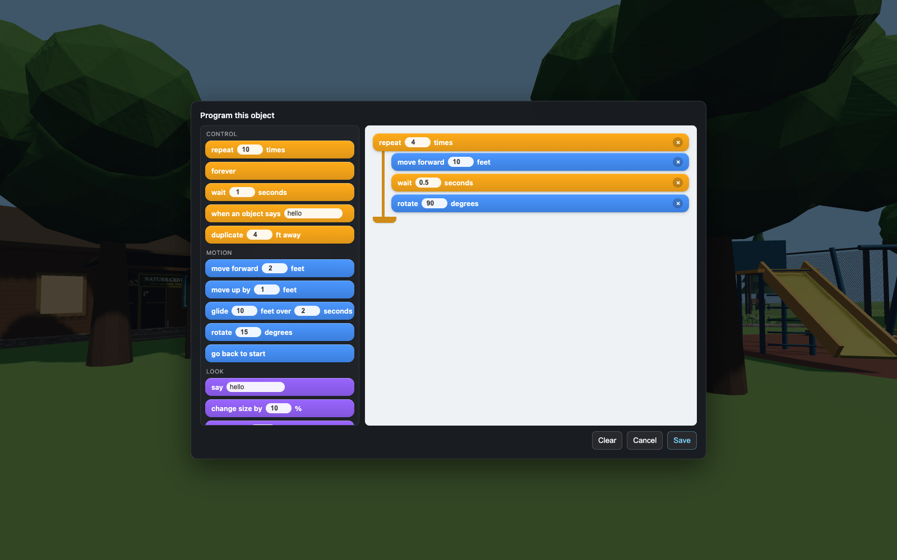
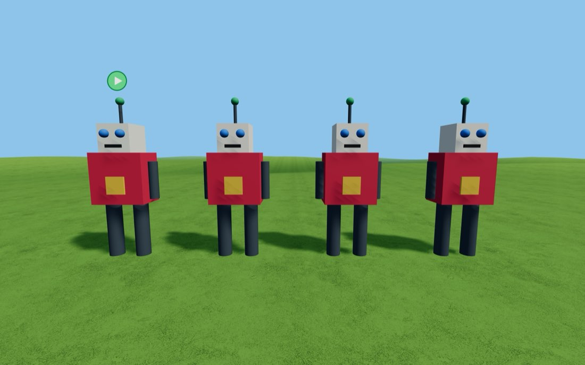
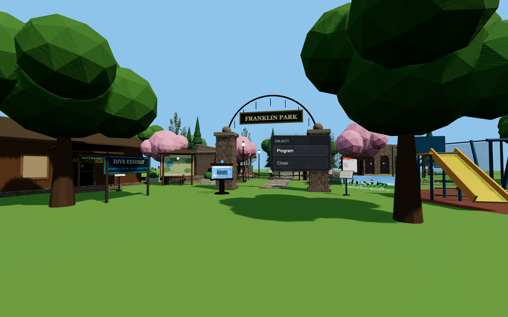

🧩 The Coding Blocks
Nine blocks, three colours, no typing. Works on anything in any world — including whatever you just built.
Getting there: click any object and choose Program. The palette is on the left, your stack goes on the right. Drag a block across, drop it into the mouth of another block to nest it, and press Save. It starts immediately.



All nine blocks
Three families, three colours. The colour on this card is the colour in the app.
Control
When and how often things happen
- repeat 10 times
- forever
- wait 1 seconds
- duplicate 4 ft away
💡 repeat and forever have a mouth — whatever you drop inside is what gets repeated. duplicate is the odd one out: it is the only block whose effect leaves the object it is written on.
Motion
Where things go
- move X by 1 feet
- move Y by 1 feet
- move Z by 1 feet
- rotate 15 degrees
💡 Y is up. X and Z are the two flat directions. Negative numbers go the other way — move Y by -0.5 sinks something into the ground.
Looks
What things look like
- change size by 10 %
- change color to ▦
💡 Percentages compound. +10% twenty times over is not double — it is about 6.7 times bigger. And +10% followed by −10% does not take you back where you started. Try it.
Try these three
-
A proper patrol
Out and back, forever, with an about-turn at each end so it always faces the way it is going.
- forever
- repeat 20 times
- move X by 0.3 feet
- rotate 180 degrees
- repeat 20 times
- move X by 0.3 feet
- rotate 180 degrees
-
A slow heartbeat
Grow a little, shrink a little, pause. Watch what the compounding does over a few minutes.
- forever
- change size by 6 %
- wait 0.4 seconds
- change size by -6 %
- wait 0.4 seconds
-
A crowd of one thing
Build a model, then let it copy itself into a row. Each copy lands one step further out.
- repeat 5 times
- duplicate 5 ft away
Block colours
- Control — repeat, forever, wait, duplicate
- Motion — move X / Y / Z, rotate
- Looks — change size, change colour
One rule that catches everybody: move X, move Y and move Z slide an object along the world's directions, not the direction it happens to be facing. Turning something does not change which way it will then travel — which is why every patrol on these cards goes out and comes back rather than driving in a circle. It is a real idea, not a limitation to apologise for: the difference between turning and moving is exactly the thing that trips people up in every robotics club in the world.